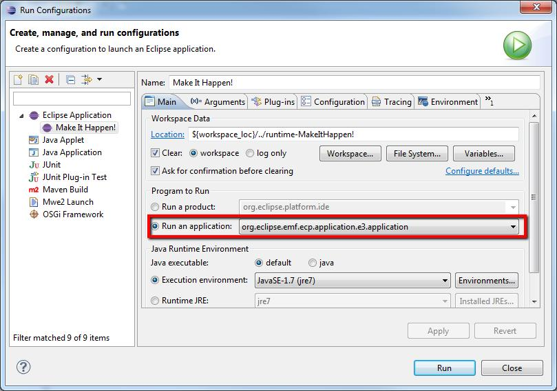

Everyone is invited to get involved with the EMFStore project. Before you plan any kind of contribution, it is a good idea to contact the project team.
- Writing bug reports
Please provide a short and concise explanation of the problem and a snippet to reproduce the issue, ideally a JUnit test case that outlines the expected behavior. You are also invited to enter feature requests. Please use Bugzilla to report bugs and feature requests.
- Providing a patch to fix a bug or add a feature
Please attach your patch to the bug report in question or create a new report using Bugzilla.
- Contribute documentation
If you found something that is not documented, please share your knowledge with other users. Please contact us, to find the appropriate place to add your documentation.
How to setup your IDE
- Step 1: Download and install Eclipse
Please use the Eclipse Modeling Tools from the Eclipse downloads section. Refer to the Plugin/Feature Configuration Guidelines on how to setup your preferences.
- Step 2: Additional Plug-Ins
Install Checkstyle Plug-In from either the Marketplace (Help->Eclipse Marketplace...) or from the Checkstyle Updatesite.
- Step 3: Check-out the source via git
If you want to use git as an anonymous user (read-only) please use the following URLs:
(ssh://git.eclipse.org/gitroot/emf-store/org.eclipse.emf.emfstore.core.git)If you want to use git as a committer, please use the following URL:
(ssh://committer_id@git.eclipse.org/gitroot/emf-store/org.eclipse.emf.emfstore.core.git)Select the "develop" branch. The develop branch is used for development while the master branch contains tagged release versions of EMFStore that must not be changed once they have been released. Press "Select all" and proceed with the import.
Please refer to this tutorial to clone git repositories. Now, you can import the projects from the cloned git repository. See here to learn how to import projects from a git repository.
- Step 4: How to import and set the target
Once you have checked out the branch, you will see the following directory structure consisting of four directories:
bundles,features,testsandreleng. Each one of these directories serves a specific purpose:bundlescontains all EMFStore pluginsfeaturescontains all featurestestscontains all testsrelengcontains all release enginnering-specific assets
Now locate and open the emfstore.target file in the _target bundle imported from the repository. When it is resolved, set the target definition as the target platform. Please note that the resolution of the target platform may take some time the first time it is set.
- Step 5: Start EMFStore
As a reference UI, we use the User Interface provided by EMF Client Platform (EMFCP). For testing purposes, you can use this example model. Import it into your EMFCP workspace.
Start the model with EMFCP by creating a run configuration. This run configuration will automatically also contain the example model from your developer workspace. To create a run configuration, select the Eclipse menu Run → Run Configurations.
Create a new run configuration and run the application org.eclipse.emf.ecp.application.e3.application, as shown in the following screenshot.

Now you can start your application; it should present you with an empty ECP workbench containing the example model.
Framework Developer Documentation
-
We keep this information in our developer wiki.
Branching scheme
-
In our GIT Repositories we are using the branching scheme described here.
-
We have a master branch containing the last release. A development branch containing the current development state and (hopefully) some feature branches containing new feature developments.
-
So if you are a developer please commit on the develop branch in the future. If you develop a new feature please open a feature branch and merge it back to the develop branch when your feature is finished. Don't commit on the master branch as it should only contain stable release versions merged there by the release engineer.
-